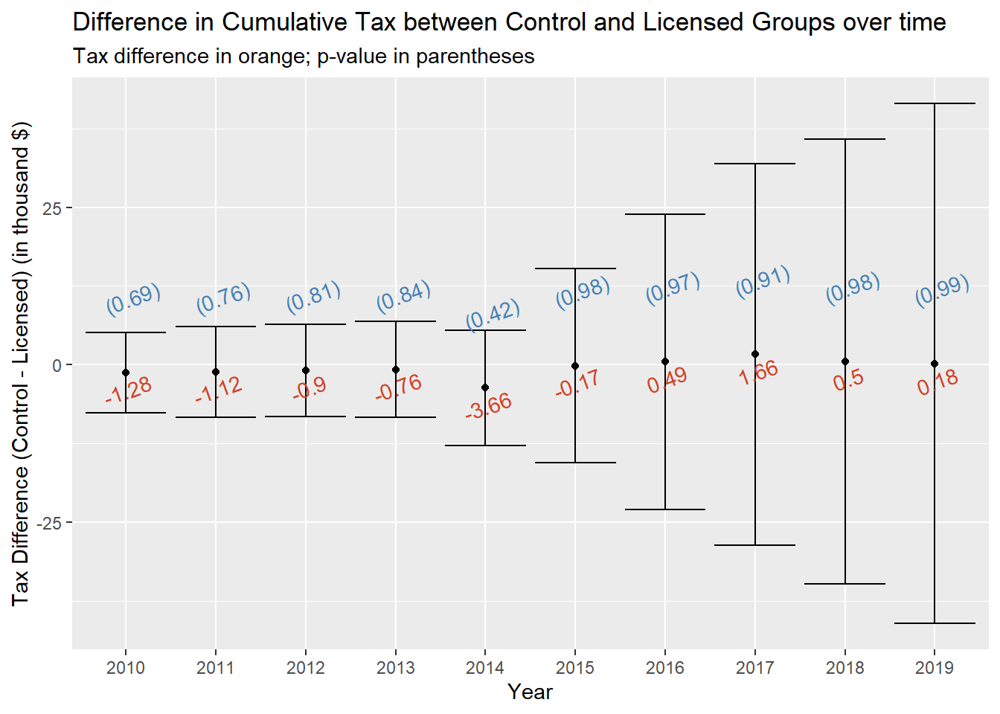

Analysis
We focus on two analyses in this section. One is to compare tax differences by jurisdiction group over time. The other is to model taxation under the regression analysis framework.
Preliminary Analysis
\(~\)
Goal
To Compare Tax differences by jurisdiction group
Differing on the degree of control on liquor wholesales and retail, states can be categorized into two types – control jurisdiction and licensed jurisdiction, with licensed states having more control. Such categorization may lead to difference in taxation. Therefore, we are interested in examining if there is any difference in taxation by these two groups of states.
For viewing convenience, we display a state map showing the control jurisdiction and the licensed jurisdiction.
us_states <- map_data("state")
states_map =
us_states %>%
mutate(
state_group =
ifelse(region %in% str_to_lower(license), "licensed",
ifelse(region %in% str_to_lower(control), "control", "NA"))
)
theme_map <- function(base_size = 9, base_family = "") {
require(grid)
theme_bw(base_size = base_size, base_family = base_family) %+replace%
theme(axis.line = element_blank(),
axis.text = element_blank(),
axis.ticks = element_blank(),
axis.title = element_blank(),
panel.background = element_blank(),
panel.border = element_blank(),
panel.grid = element_blank(),
panel.spacing = unit(0, "lines"),
plot.background = element_blank(),
legend.justification = c(0,0),
legend.position = c(0,0)
)
}
p0 <- ggplot(data = states_map,
mapping = aes(x = long, y = lat,
group = group, fill = state_group)) +
scale_fill_manual(values = c("snow3", "steelblue"))
p1 <- p0 + geom_polygon(color = "gray90", size = 0.1) +
coord_map(projection = "albers", lat0 = 39, lat1 = 45)
p2 <- p1 +
labs(title = "Jurisdiction Group", fill = NULL)
p3 <- p2 + theme_map()
centroids <- data.frame(region = tolower(state.name),
long = state.center$x, lat = state.center$y)
centroids$abb <- state.abb[match(centroids$region, tolower(state.name))]
# Collect names of the 32 states in my data.
statenames <- data.frame(region = unique(states_map$region))
# Merge it with centroids
centroids <- merge(statenames, centroids, by = "region")
p3 +
with(centroids,
annotate(geom = "text", x = long, y = lat, label = abb,
size = 2.3, color = "gray30")
)
\(~\)
Cumulative Tax Collected
First, we looked at the cumulative taxes collected. This tax is specifically looking at the “Beer removed for consumption or sale including beer removed tax determined for consumption or sale in a tavern or on brewery premises”.
We performed t-test for each year and would like to see if the cumulative taxes collected differ significantly between the control states and the licensed states.
The following plot gives the average tax difference (Tax in the Control States - Tax in the Licensed States), together with its 95% confidence interval and p-value, from 2010 to 2019.
We can see that the mean difference in the cumulative tax collected does not deviate much from 0 for all years, though the confidence interval seems to have a fan shape over time. Large p-values from t-tests also suggest that there is no sufficient evidence showing any significant difference between two jurisdiction groups in the cumulative tax collected from 2010 to 2019.
# tax
year = colnames(tax_df_group)[-c(1:3)]
t_test_output = NULL
for (i in 1:length(year)) {
t_test = t.test(tax_df_group[[year[i]]]~group, data = tax_df_group) %>% broom::tidy()
t_test_output = rbind(t_test_output, t_test)
}
tax_group_result =
t_test_output %>%
mutate(year = year) %>%
relocate(year) %>%
rename(
control_est = estimate1,
licensed_est = estimate2,
control_minus_licensed = estimate) %>%
select(year, control_minus_licensed, p.value, conf.low, conf.high) %>%
janitor::clean_names() %>%
mutate(
control_minus_licensed = control_minus_licensed / 1000,
conf_low = conf_low / 1000,
conf_high = conf_high / 1000) %>%
mutate_at(2:3, round, 2)
tax_group_result %>%
mutate(year = as.character(year)) %>%
ggplot(aes(x = year, y = control_minus_licensed)) +
geom_point() +
geom_errorbar(aes(ymin = conf_low, ymax = conf_high)) +
labs(
title = "Difference in Cumulative Tax between Control and Licensed Groups over time",
subtitle = "Tax difference in orange; p-value in parentheses",
y = "Tax Difference (Control - Licensed) (in thousand $)",
x = "Year") +
geom_text(
aes(label = paste0("(", p_value, ")")),
color = "steelblue", hjust = -0.05, vjust = -3.7, angle = 20) +
geom_text(
aes(label = control_minus_licensed),
color = "#D14124", hjust = 0.6, vjust = 1.5, angle = 20)
\(~\)
Tax per Barrel
Next, we looked at the tax per barrel, which is the effective excise tax (volume adjusted). Similar to what have been done in previous subsection, we performed t-test for each year and would like to see if there is any significant difference in the tax per barrel between the control states and the licensed states.
The following plot gives the average tax difference (Tax in the Control States - Tax in the Licensed States), together with its 95% confidence interval and p-value, from 2010 to 2019.
We can see that the mean difference in the tax per barrel does not deviate much from 0 for all years, and the confidence interval seems to be consistently wide over time. Large p-values from t-tests again suggest that there is no sufficient evidence showing any significant difference between two jurisdiction groups in the tax per barrel from 2010 to 2019.
# state_tax
state_tax_group_result =
state_tax_df_group %>%
nest(data = -year) %>%
mutate(
t_test = purrr::map(.x = data, ~t.test(adjusted ~ group, data = .x)),
result = purrr::map(t_test, broom::tidy)
) %>%
select(year, result) %>%
unnest(result) %>%
rename(control_est = estimate1,
licensed_est = estimate2,
control_minus_licensed = estimate) %>%
select(year, control_minus_licensed, p.value, conf.low, conf.high) %>%
janitor::clean_names() %>%
mutate_at(2:3, round, 2)
state_tax_group_result %>%
mutate(year = as.character(year)) %>%
ggplot(aes(x = year, y = control_minus_licensed)) +
geom_point() +
geom_errorbar(aes(ymin = conf_low, ymax = conf_high)) +
labs(
title = "Difference in Tax per Barrel between Control and Licensed Groups over time",
subtitle = "Tax difference in orange; p-value in parentheses",
y = "Tax Difference (Control - Licensed) in $",
x = "Year") +
geom_text(
aes(label = paste0("(", p_value, ")")),
color = "steelblue", hjust = -0.05, vjust = -3.5, angle = 20) +
geom_text(
aes(label = control_minus_licensed),
color = "#D14124", hjust = 0.6, vjust = 2, angle = 20)
\(~\)
Recap
- Cumulative tax collected does not differ significantly by jurisdiction groups from 2010 to 2019.
- Tax per barrel does not differ significantly by jurisdiction groups from 2010 to 2019.
Regression Anlaysis
In this part, we would like to explore more regarding the relationship between taxation and jurisdiction group, year, shipments, population, and consumption. To be consistent with our focus in the previous section, we fit two regression models – one for the cumulative tax collected and the other for the tax per barrel.
\(~\)
Variables
Our explaining variables of interest include jurisdiction group, year, shipments, population, and consumption.
- group: jurisdiction group (control vs licensed)
- shipments: amount of barrels shipped
- population: the number of individuals who are 21 years old or older
- consumption: consumption of barrels per capita
\(~\)
Model 1 - Cumulative Tax Collected
We first focus on the cumulative tax collected. Our model of interest is:
\[Cumulative \ tax = \beta_0 + \beta_1 \ Group + \beta_2 Year + \beta_3 \ Shipments + \beta_4 \ Population+ \beta_5 \ Consumption.\]
\(~\)
Results
Variables with significant p-value are highlighted in blue.
# Load state_df
state_df = read_csv("data_import_cleaning/state_df.csv")
## Parsed with column specification:
## cols(
## state = col_character(),
## shipments = col_double(),
## rank_3 = col_double(),
## population = col_double(),
## consumption = col_double(),
## rank_6 = col_double(),
## year = col_double()
## )
# Merge dataset
reg_df =
tax_df_group %>%
pivot_longer(
"2010":"2019",
names_to = "year",
values_to = "total_tax"
) %>%
mutate(year = as.numeric(year)) %>%
left_join(., state_df, by = c("state", "year")) %>%
select(total_tax, group, year, shipments, population, consumption)
# Replace 0's with NA's
reg_df[reg_df == 0] <- NA
# Fit model
lm_model = lm(total_tax ~ group + year + shipments + population + consumption, data = reg_df)
summary(lm_model)
##
## Call:
## lm(formula = total_tax ~ group + year + shipments + population +
## consumption, data = reg_df)
##
## Residuals:
## Min 1Q Median 3Q Max
## -90576 -15530 -4738 10976 193775
##
## Coefficients:
## Estimate Std. Error t value Pr(>|t|)
## (Intercept) -1.415e+07 9.800e+05 -14.437 < 2e-16 ***
## grouplicensed -7.551e+03 2.973e+03 -2.540 0.011382 *
## year 7.012e+03 4.858e+02 14.434 < 2e-16 ***
## shipments -9.523e-03 2.279e-03 -4.179 3.46e-05 ***
## population 1.365e-02 2.033e-03 6.714 5.17e-11 ***
## consumption 1.189e+03 3.396e+02 3.501 0.000504 ***
## ---
## Signif. codes: 0 '***' 0.001 '**' 0.01 '*' 0.05 '.' 0.1 ' ' 1
##
## Residual standard error: 30570 on 500 degrees of freedom
## (4 observations deleted due to missingness)
## Multiple R-squared: 0.5548, Adjusted R-squared: 0.5503
## F-statistic: 124.6 on 5 and 500 DF, p-value: < 2.2e-16
broom::tidy(lm_model) %>%
mutate_at(2:5, format, digits = 2, nsmall = 1) %>%
janitor::clean_names() %>%
rename(
Variable = term,
Coefficient = estimate,
`Standard Error` = std_error,
`t-Statistic` = statistic,
`P-value` = p_value
) %>%
mutate(
Variable = ifelse(Variable == "grouplicensed", "Licensed Group", Variable),
Variable = str_to_title(Variable)
) %>%
DT::datatable(., rownames = F,
options = list(pageLength = 10)) %>%
DT::formatStyle(
columns = "P-value",
background = DT::styleInterval(c(0.05),c("lightsteelblue","white")),
target = "row")\(~\)
Interpretation
- All variables in our model are significant at the 5% significance level.
- Our model fit is acceptable with an adjusted \(R^2 = 0.55\).
- Previously, we did not find any significant difference in the cumulative tax between two jurisdiction groups. However, after controlling for year, shipments, population and consumption, we found that licensed states are estimated to have approximately $7.6k less cumulative tax collected than the control states.
- Cumulative tax collected is estimate to
- increase approximately $7k per year, holding the group, shipments, population and consumption unchanged.
- increase approximately $1.2k for one unit increase in consumption per capita, holding the group, year, shipments, and population unchanged.
- increase approximately $14 for each 1k increase in population, holding the group, year, shipments, and consumption unchanged.
- decrease approximately $9.6 for each 1k increase in shipments, holding the group, year, population, and consumption unchanged.
\(~\)
Model 2 - Tax Per Barrel
We next look at the tax per barrel. Our model of interest is
\[Tax \ per \ barrel = \beta_0 + \beta_1 \ Group + \beta_2 Year + \beta_3 \ Shipments + \beta_4 \ Population+ \beta_5 \ Consumption.\]
\(~\)
Results
Variables with significant p-value are highlighted in blue.
# Load state_df
state_df = read_csv("data_import_cleaning/state_df.csv")
## Parsed with column specification:
## cols(
## state = col_character(),
## shipments = col_double(),
## rank_3 = col_double(),
## population = col_double(),
## consumption = col_double(),
## rank_6 = col_double(),
## year = col_double()
## )
# Merge dataset
reg_df2 =
state_tax_df_group %>%
rename(adjusted_tax = adjusted) %>%
mutate(year = as.numeric(year)) %>%
left_join(., state_df, by = c("state", "year")) %>%
select(adjusted_tax, group, year, shipments, population, consumption)
# Replace 0's with NA's
reg_df2[reg_df2 == 0] <- NA
# Fit model
lm_model2 = lm(adjusted_tax ~ group + year + shipments + population + consumption, data = reg_df2)
summary(lm_model2)
##
## Call:
## lm(formula = adjusted_tax ~ group + year + shipments + population +
## consumption, data = reg_df2)
##
## Residuals:
## Min 1Q Median 3Q Max
## -8.989 -4.915 -2.910 1.895 30.936
##
## Coefficients:
## Estimate Std. Error t value Pr(>|t|)
## (Intercept) -1.351e+02 2.512e+02 -0.538 0.591
## grouplicensed -2.893e-01 7.591e-01 -0.381 0.703
## year 7.307e-02 1.245e-01 0.587 0.558
## shipments 4.369e-07 5.861e-07 0.745 0.456
## population -4.517e-07 5.228e-07 -0.864 0.388
## consumption -9.209e-02 8.731e-02 -1.055 0.292
##
## Residual standard error: 7.863 on 504 degrees of freedom
## Multiple R-squared: 0.004557, Adjusted R-squared: -0.005319
## F-statistic: 0.4614 on 5 and 504 DF, p-value: 0.805
broom::tidy(lm_model2) %>%
mutate_at(2:5, format, digits = 2, nsmall = 1) %>%
janitor::clean_names() %>%
rename(
Variable = term,
Coefficient = estimate,
`Standard Error` = std_error,
`t-Statistic` = statistic,
`P-value` = p_value
) %>%
mutate(
Variable = ifelse(Variable == "grouplicensed", "Licensed Group", Variable),
Variable = str_to_title(Variable)
) %>%
DT::datatable(., rownames = F,
options = list(pageLength = 10)) %>%
DT::formatStyle(
columns = "P-value",
background = DT::styleInterval(c(0.05),c("lightsteelblue","white")),
target = "row")\(~\)
Interpretation
- All variables in our model are not significant at the 5% significance level.
- This model does not fit well as the adjusted \(R^2\) is approximately 0.
Highlights
- Our data suggested that tax per barrel does not differ significantly by jurisdiction groups from 2010 to 2019.
- After controlling for year, amount of barrels shipped, population above 21 years old and consumption of barrels per capita, we found that licensed states are estimated to have less cumulative tax collected than the control states from 2010 to 2019.
- In addition, Cumulative tax collected is estimate to increase with year, consumption per capita and population but decrease with shipments.
\(~\)
A work by Amy Pitts, Ruiyang Li, Wenbo Fei, and Ziyi (Iris) Wang
Visualizations and analyses performed using R (v4.0.2) and RStudio (v1.3.1073).
© Copyright 2020 The Beer Project Team, All Rights Reserved | Powered by Github.io